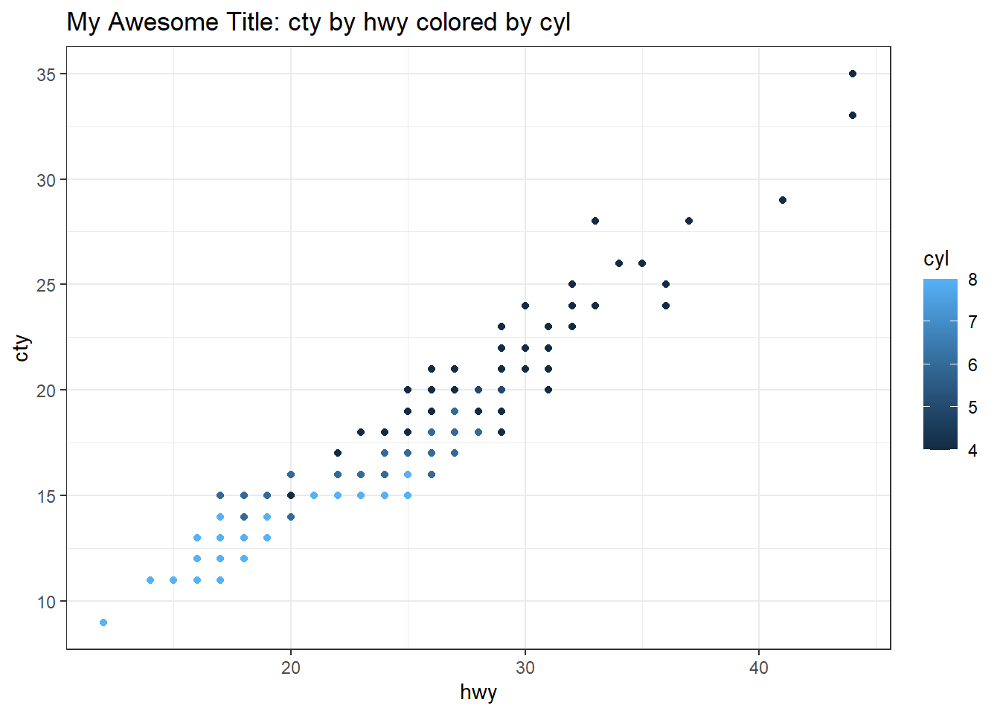
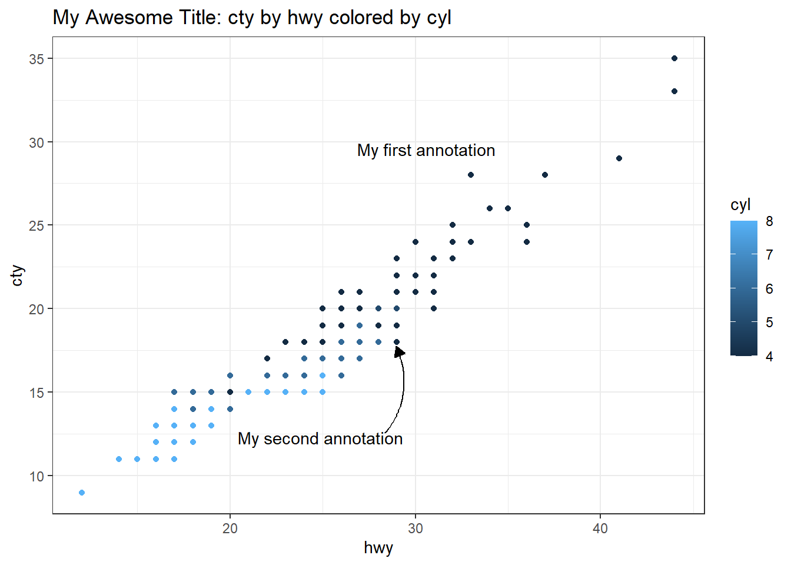

# graphing library
library(ggplot2)
# GUI's for ggplot
library(ggplotgui)
library(esquisse)
# GUI's for annotation
library(ggannotate)
library(easylabel)
# EDA
library(explore)GUI roundup for editing, plotting, and annotating
how-to
A brief review of some graphical user interfaces (GUI’s) for working with data in RStudio.
Introduction

Despite the fact that there are some valid arguments to be made that “\[y\]ou can’t do data science in a GUI,” this post is a short roundup of some GUI’s for R. The primary focus is on libraries that offer a GUI to ggplot2 (Wickham et al. 2021) but a few other libraries related to data loading as well as plot annotation are also included. One of the big advantages of using R is keeping a record of how data are processed and presented. The instructions are written out in lines of code that use functions (verbs) to manipulate objects (nouns). Working this way exposes what takes place under a GUI and leaves a clear record of what was done. It is really useful for reproducibility (Stodden, Leisch, and Peng 2014).
 Source: r/ProgrammerHumor
Source: r/ProgrammerHumor
Data science requires programming; a GUI does not provide the power necessary to tackle the creative challenges that data science requires.
There are huge advantages to code, particularly when you see it as a medium of communication.
R is a terrific environment for writing data analysis code. It has some quirky features as a programming language, but many of the quirks are well tailored to the problems of data science.
Code should be primary artefact of any analysis, but you might generate the code in ways apart from typing it on a keyboard.
– Hadley Wickham 2018 “You can’t do data science in a GUI” talk at the Association for Computing Machinery (emphasis added).
While there are clear advantages to writing out commands as syntax, visualizations are visual meaning it is nice to interact with them visually. In that context, a GUI makes sense. I enjoy plotting things in R, writing it out line by line, but sometimes I want a really quick plot but don’t want to load data into another program. Also, I really don’t care for annotating figures via text commands, guessing at coordinates iteratively and rebuilding the figure until I get it correct. This approach is slow; I’d much prefer to click on the figure and move things around graphically–while retaining the ability to manipulate the underlying code that constructs the figure. Fortunately, R and RStudio permit this.
Out of the tools reviewed here, my favorites right now are esquisse for plotting and ggannotate for annotations. Both tools:
- work with data sets or plots that are in the environment;
- produce R code output that can be pasted into R Markdown;
- can be used together by building a plot in
esquisse, assigning it to a variable, and calling withggannotatefor final touch up.
These GUI’s are not replacements for learning to write good code. However, for people new to writing computer instructions, GUI’s that return code can be helpful by providing some models that one can begin to tinker with. These GUI’s are also useful for quickly putting together an exploratory plot. Lets load our libraries and get started.
Editing Data
Often times data from the wild require tidying, transformation, and exploration. At these stages, looking at data is key. The RStudio viewer is really good for looking at data, but the Data Viewer is read only.
When starting out in R, particularly if you are already accustomed to using spreadsheet software, it can be tricky to wrangle data in R with nothing but lines of code. This is where a GUI can help one get over some initial hurdles. Generally it is best practice to leave the original data unaltered and to define any transformations of changes in a script. For doing this, I often use some combination of dplyr functions like mutate along with stringr functions like str_replace. However, sometimes you just need to get in and tweak a value or two. Being able to do that right in RStudio is nice.

Source: r/rstatmemes
DataEditR
The DataEditR library has been around since at least 2020, and though there seems to be a single contributor (Dillon Hammill who also contributes to rhandsontable, the library has 10 releases, and seems to be updated regularly. DataEditR is for viewing, entering, filtering, and editing data. Let’s load some sample data from ggplot2 that we can look at and manipulate in DataEditR.
# Call the data and assign to a df
data(mpg)
df <- mpgOnce the library is installed, the GUI can be invoked in two ways:
as an RStudio Addon, though this method does not seem to offer the full range of configuration options;
or via function call submitted in the console with the command
data_edit(data, arguments). There are a wide range of arguments that include exporting code and identifying the viewer.eg:
DataEditR::data_edit(df,viewer = "browser")opens the editor in the default browser window; this keeps RStudio free.eg:
DataEditR::data_edit(df, code = TRUE)opens the editor in the default RStudio dialogue and outputs code that reflects manipulations made in the GUI.
It is possible to: select and edit columns and rows, drag to fill cells, copy and paste from external sources, implement check boxes or drop down lists, create read only columns, among other tasks.
It is possible to either edit data frames in the environment or open an external file. To edit a dataframe in the environment, just type its name into the “Data to edit:” box.
Any changes to the dataframe need to be saved to a file, as it does not look like changes get saved to the Environment. Changes to the table can be saved to a csv, but I have found it is good to check the output file before closing the GUI.
For more details on the library, consult both the getting started vignette and function reference.
rhandsontable
The rhandsontable library is an interface to the Handsontable.js Library. This library has been around for several years, there are 15 contributors, and the library is regularly maintained.
Once the rhandsontable library is installed, the GUI can be invoked from the RStudio Adins menu. This tool can operate on dataframes that are loaded into the environment or from an external file. I have not experimented much with rhandsontable and for the most part it looks to have been superseded by DataEditR.
Plotting
There are several GUI’s for ggplot2 that can quickly render figures and provide code that can be further customized. Both ggplotgui and esquisse are handy and quick. I think esquisse is more powerful and being more actively developed, when I want a ggplot2 GUI it is what I use.
esquisse
The esquisse (French for “sketch”) library is part of the dreamRs group (Meyer and Perrier 2021), there are eight contributors, and the project is currently being updated regularly. The GUI offers access to a wide range of functions and provides code output for further customization.
The library can be installed from CRAN by
install.packages("esquisse"). Once the library is installed, theesquisseinterface can be called from RStudio’s Addins “ggplot2 builder” . Alternatively one can enteresquisser()into the R console to invoke the GUI. The interface is meant to be run interactively soesquisser()calls should not be placed in R Markdown code chunks.
With the GUI running, in the “Import” tab select a data source; in this case we’ll pull up
mpgloaded into the environment during a prior step. This dataset is part ofggplot2.
Once the data are loaded, they can reviewed with the “View” tab and the column types modified in the “Update” tab; if modifying the column types be sure to click apply.
Import the data by clicking “Import”.
Once imported, place variables in the appropriate X and Y slots; in this case,
hwyin X andctyin Y withcylin color.
Under “Labels & Tile” add some title text; we’ll use the same one as above.


To match the
ggplotguidefault (see below), we can set the theme; click “Appearance” and set the Theme tobw.
Once the plot is set up as desired click the “Code” button and copy the code or insert it directly into the script.

The code below is pasted directly from esquisse. We set the options so the graph would look identical to the one produced by ggplotgui. notice how the code generated by esquisse is slightly different.
# Plot generated by esquisse
ggplot(mpg) +
aes(x = hwy, y = cty, colour = cyl) +
geom_point(shape = "circle", size = 1.5) +
scale_color_gradient() +
labs(title = "My Awesome Title: cty by hwy colored by cyl") +
theme_bw()
There are many other parameters that esquisse can modify. Pulling up the options exposes the full range of possibilities. I have not fully explored these.

ggplotgui
The ggplotgui library (Stulp 2017) was begun about five years ago and does not look to have been updated since 2020. It installed without issue and still works very well.
Install:
remotes::install_github("mattcowgill/ggannotate")Call the GUI by sending the following to the R console
ggplot_shiny(). This will open a shiny interface.
With the GUI running either load sample data, upload a file, or paste data from the clipboard.
With some data loaded, switch to the
ggplottab.
Set the type of graph to
scatter.Set the Y and X variables; here we use city and hwy respectively.
Consider an optional grouping variable.

Add a title by clicking the “Change aesthetics” section on the right; click the “Text” tab and then tick “Add title”.

Note other settings that can be changed to the left and right of the plot.
Click the “R-code” tab and copy the necessary code; read the comments noting that there are four sections in the code.
Copy the section that creates the graph and paste it into an R Markdown document.
For the figure to work, the data for the graph need to be assigned to the variable the graph calls. In this case,
df. We used thempgdataset, so we call it and assign todf. See code chunk below; note that ggplotgui defaults totheme_bw().
# Call the data and assign to a df
data(mpg)
df <- mpg
# Code from ggplotgui:
graph <- ggplot(df, aes(x = hwy, y = cty, colour = cyl)) +
geom_point() +
labs(x = 'hwy', y = 'cty') +
ggtitle('My Awesome Title: cty by hwy colored by cyl') +
theme_bw()
graph
Check out the library “Get started with esquisse” vignette for more details.
Annotation
Annotation can be a very important part of telling a story with figures and plots, particularly if the graphical representation of a numerical series is being related to something else. For example, perhaps one is looking at the volume of TV coverage in relation to some events in the past. In such a case, annotating relevant events onto a plot of news coverage volume could help illustrate relationships between the timing, volume, and duration of that event’s coverage in TV news. Placing annotation text on a plot is an aesthetic exercise and so a GUI is a good tool for the job.
ggannotate
The ggannotate library began around 2000 (Cowgill 2020), there are two contributors, it appears relatively actively updated, and it is still experimental.
The interface is meant to be run interactively so ggannotate calls should not be placed in R Markdown code chunks. There are two ways to initiate a ggannotate session:
Paste the gall in the console. An example call to the library’s interactive loading the graph example from above would be as follows:
ggannotate(graph).Evoke the GUI via the RStudio Adins menu.

Use the GUI to create annotations, by clicking on the graph. Annotations can be built on several different layers and one can switch from layer to layer.

Once the annotations are as desired click on “Copy and Close” then paste the annotations below the ggplot object. If there are multiple annotations, they are strung together with
+. However, note that the tool does not seem to write very “neat” code in that the indentations are off. There may be a way to clean this up automatically.
# Raw text copied from ggannotate
geom_curve(data = data.frame(x = 28.3606748882948, y = 12.5481425844177, xend = 28.9568379194368, yend = 17.745856135804),
mapping = aes(x = x, y = y, xend = xend, yend = yend),
curvature = 0.305, arrow = arrow(30L, unit(0.1, "inches"),
"last", "closed"),
inherit.aes = FALSE) +
geom_text(data = data.frame(x = c(24.9029293076709, 30.6260944066346 ),
y = c(12.2792953317598, 29.5751352527522),
label = c("My second annotation", "My first annotation")),
mapping = aes(x = x, y = y, label = label),
inherit.aes = FALSE# Graph object produced earlier
graph +
# Cleaned up code copied from ggannotate
geom_curve(
data = data.frame(x = 28.3606748882948,
y = 12.5481425844177,
xend = 28.9568379194368,
yend = 17.745856135804),
mapping = aes(x = x, y = y, xend = xend, yend = yend),
curvature = 0.305, arrow = arrow(30L, unit(0.1, "inches"),
"last", "closed"),
inherit.aes = FALSE) +
geom_text(data = data.frame(x = c(24.9029293076709, 30.6260944066346 ),
y = c(12.2792953317598, 29.5751352527522),
label = c("My second annotation", "My first annotation")),
mapping = aes(x = x, y = y, label = label),
inherit.aes = FALSE)
easylabel
The easylabel library is for interactive labeling of plots (Lewis and Goldmann 2021). It looks to have been published in 2021 and there were three releases that year.
The easylabel GUI is interactive, so other than loading the library, calls to easylabel should not be placed in R Markdown documents.
- To evoke the
easylabelinterface, call if from the console. - Calls to
easylabelmust be supplied with a dataframe, rather than a plot object. - Data points are labeled by clicking on the point.
- The direction of the annotation can be set or individual labels can be dragged into position.
At present, the library only permits output as pdf or a plotly graph. The export to plotly option does not seem to provide the underlying code. This library looks potentially very useful, but right now for new R users does not appear to permit easy integration into R Markdown documents. easylabel is one I plan on watching.

# Sample code to evoke easylabel
easylabel(df, x="hwy", y = "cty",
colScheme = "royalblue")Exploratory Data Analysis
explore
The explorelibrary has two contributors and was updated recently (Krasser 2021). explore seeks to facilitate interactive exploratory data analysis. The library also offers four verbs to facilitate quick EDA: explore, describe, explain, report. I have not dug into these, but the GUI offers some very quick and useful feedback on data structure.
The GUI runs interactively and should not be placed into an R Markdown code chunk. Evoke the GUI by calling it in the console, and direct the call to a dataframe.
explore(mpg)From the GUI, the report all button generates a new HTML page with a wide range of graphs. The explore library has four helpful vignettes showing different data sets. I found the first vignette the most thorough and useful.

I think this can be a really useful tool for getting a first quick look or doing some probing. That is what it is built to do. Customizing and finalizing figures would require separate plotting.
modelStudio
The modelStudio library is part of the DrWhy.AI family of libraries. The focus of the larger project seems to be model prediction. I have not yet worked with these tools, but modelStudio offers a GUI for exploring models and provides a means to generate data dashboards. This is certainly something to look into.
References
Cowgill, Matt. 2020. Ggannotate: Interactively Annotate Ggplot2 Plots. https://github.com/MattCowgill/ggannotate.
Krasser, Roland. 2021. Explore: Simplifies Exploratory Data Analysis. https://github.com/rolkra/explore/.
Lewis, Myles, and Katriona Goldmann. 2021. Easylabel: Interactive Scatter Plot and Volcano Plot Labels. https://CRAN.R-project.org/package=easylabel.
Meyer, Fanny, and Victor Perrier. 2021. Esquisse: Explore and Visualize Your Data Interactively. https://github.com/dreamRs/esquisse.
Stodden, Victoria, Friedrich Leisch, and Roger D. Peng, eds. 2014. Implementing Reproducible Research. The r Series. Boca Raton: CRC Press, Taylor & Francis Group.
Stulp, Gert. 2017. Ggplotgui: Create Ggplots via a Graphical User Interface. https://github.com/gertstulp/ggplotgui/.
Wickham, Hadley, Winston Chang, Lionel Henry, Thomas Lin Pedersen, Kohske Takahashi, Claus Wilke, Kara Woo, Hiroaki Yutani, and Dewey Dunnington. 2021. Ggplot2: Create Elegant Data Visualisations Using the Grammar of Graphics. https://CRAN.R-project.org/package=ggplot2.